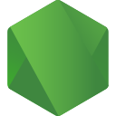
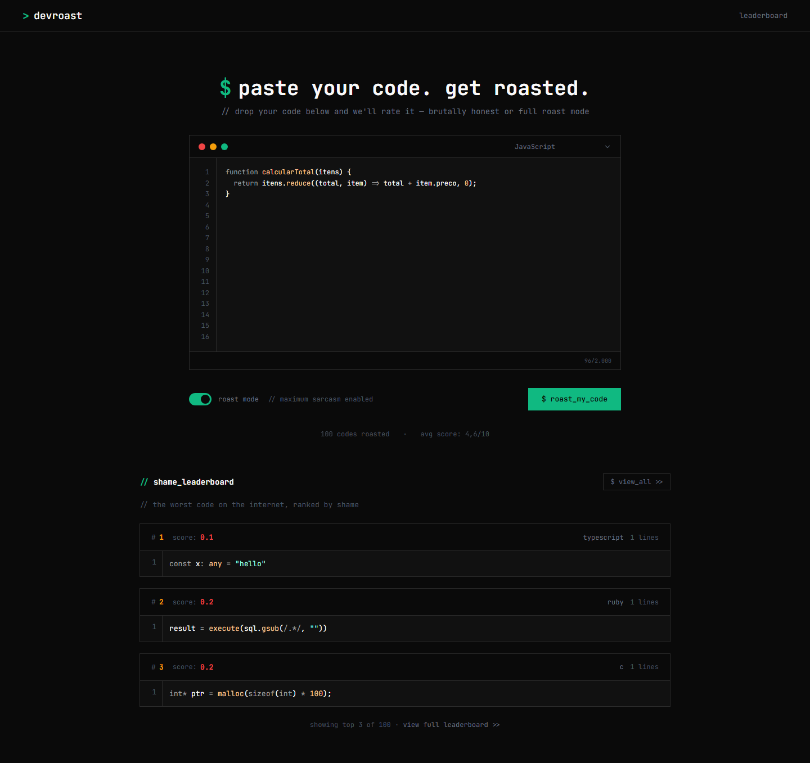

01 / FULL STACK
01 / FULL STACKGerenciador de Tarefas
Aplicação com cadastro, login e busca de tarefas. API em Express e PostgreSQL, com autenticação e testes de integração.
Ver projeto no GitHubEstudo Engenharia de Computação na UTFPR e desenvolvo aplicações da interface à API, com atenção aos dados e à experiência de uso.

Na Engenharia de Computação, encontrei espaço para unir programação e resolução de problemas. Hoje meu foco está em desenvolvimento de software, especialmente aplicações web com interface, API e banco de dados.
Também participo de uma equipe de robótica da UTFPR e desenvolvi pesquisa voluntária em simulação numérica. Essas experiências me acostumaram a investigar erros, testar soluções e trabalhar com pessoas de áreas diferentes.
Ver mais sobre mim


 01 / FULL STACK
01 / FULL STACKAplicação com cadastro, login e busca de tarefas. API em Express e PostgreSQL, com autenticação e testes de integração.
Ver projeto no GitHub
02 / FULL STACK + IAEnvio de código para análise por IA e comparação em ranking. Desenvolvido com Next.js, TypeScript, tRPC e PostgreSQL.
Ver projeto no GitHubProtótipo desktop para aluguéis, reservas e pagamentos simulados, com regras de negócio testadas em JUnit.
Ver projeto no GitHubBot que acompanha preços em lojas online e envia alertas pelo Telegram quando detecta mudanças.
Ver projeto no GitHubCompilador acadêmico com ANTLR, análise semântica e geração de código em C.
Ver projeto no GitHubModelos numéricos de transferência de calor em microprocessadores, desenvolvidos com Fortran e MATLAB.
Ver projeto no GitHubSe quiser conversar sobre desenvolvimento de software, meus projetos ou uma oportunidade, pode me chamar.